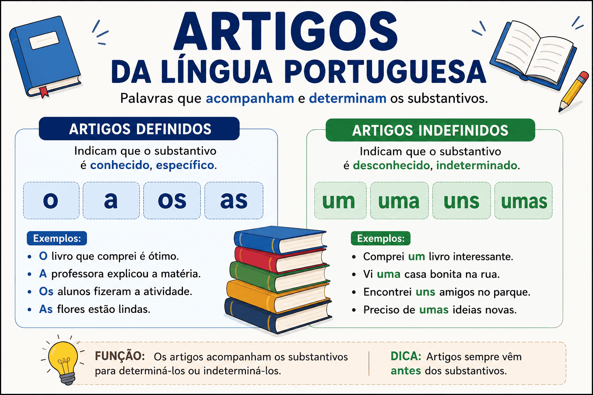

Artigos da língua portuguesa: definidos, indefinidos, usos e exemplos
Os artigos integram os grupos nominais e ajudam a apresentar os referentes de um texto. A diferença entre “um estudante” e “o estudante”, por exemplo, pode indicar maneiras distintas de introduzir e retomar uma pessoa no discurso.
Na classificação escolar, os artigos são divididos em definidos e indefinidos. Eles variam em gênero e número e se relacionam com os substantivos ou com expressões empregadas substantivamente.
Neste conteúdo, você aprenderá a identificar os artigos, interpretar seus efeitos de sentido, compreender suas combinações com preposições e distingui-los de outras classes de palavras.

O que são artigos?
Os artigos são palavras que participam da determinação dos substantivos. Seu emprego ajuda a indicar como o leitor ou o ouvinte deve compreender o referente mencionado.
Artigo indefinido
“Um estudante entrou na biblioteca.”
O referente é apresentado sem ser tratado como identificável pelo interlocutor naquele momento.
Artigo definido
“O estudante procurou um livro.”
Em uma sequência com a frase anterior, o artigo permite retomar o estudante já introduzido.
Ideia principal: os artigos não funcionam apenas como marcas de gênero e número. Eles também contribuem para a construção da referência e da continuidade do texto.
Classificação dos artigos
| Classificação | Masculino singular | Feminino singular | Masculino plural | Feminino plural |
|---|---|---|---|---|
| Definidos | o | a | os | as |
| Indefinidos | um | uma | uns | umas |
Artigos definidos
Os artigos definidos apresentam o referente como identificável no contexto. Essa identificação pode depender de uma menção anterior, da situação de comunicação, de conhecimento compartilhado ou de uma descrição.
- Retomada: “Vi uma professora. A professora estava com seus alunos.”
- Situação compartilhada: “Feche a porta, por favor”, quando os interlocutores identificam a porta em questão.
- Descrição: “O livro que você me emprestou está na mochila.”
Portanto, o artigo definido não exige que o referente tenha sido mencionado antes.
Artigos indefinidos
Os artigos indefinidos frequentemente introduzem referentes sem apresentá-los como identificáveis pelo interlocutor naquele momento.
- “Uma pesquisadora enviou uma mensagem.”
- “Precisamos de um computador para a atividade.”
- “Uns amigos vieram visitar-nos.”
- “Ela trouxe umas fotografias.”
Indefinido não significa sempre “qualquer um”
Em “Uma amiga minha ganhou o prêmio”, o falante pode saber exatamente quem é a pessoa. O artigo não a apresenta, porém, como já identificada pelo interlocutor.
Artigos e referência genérica
Os artigos também podem participar de referências a uma classe inteira, sem apontar para um único indivíduo.
- “O livro é uma importante forma de registro.” — “o livro” pode representar a categoria.
- “Um bom leitor examina o contexto.” — a afirmação pode valer genericamente para quem apresenta essa característica.
Assim, não é adequado estabelecer a equivalência rígida “definido = sempre específico” e “indefinido = sempre genérico”. A interpretação depende da construção e do contexto.
Concordância dos artigos: gênero e número
Na norma-padrão, o artigo concorda em gênero e número com o substantivo a que se relaciona.
- O livro / os livros;
- A revista / as revistas;
- Um projeto / uns projetos;
- Uma atividade / umas atividades.
O gênero gramatical do substantivo deve ser observado independentemente de sua terminação: o problema, o mapa, a mão e a foto.
O artigo precisa estar imediatamente antes do substantivo?
Não. Outras palavras podem aparecer entre o artigo e o núcleo do grupo nominal.
“Os meus dois novos livros chegaram.”
O artigo “os” se relaciona com “livros”, embora o possessivo, o numeral e o adjetivo apareçam entre eles.
Artigos e substantivação
O artigo pode marcar o emprego substantivo de palavras ou expressões que, em outros contextos, pertencem a diferentes classes.
- “O belo encanta.” — emprego substantivo de “belo”;
- “O estudar exige disciplina.” — infinitivo em posição substantiva;
- “O não também é uma resposta.” — a forma “não” é tomada como um nome.
Adjetivo
“O estudante jovem chegou.”
“Jovem” caracteriza “estudante”.
Emprego substantivo
“O jovem chegou.”
“Jovem” nomeia a pessoa e é núcleo do grupo.
A análise deve considerar a estrutura completa. Em “o belo jardim”, por exemplo, “belo” continua sendo adjetivo, pois caracteriza o núcleo “jardim”.
Artigos na continuidade do texto
A alternância entre indefinido e definido pode ajudar a introduzir e retomar informações.
“Uma estudante encontrou um caderno no pátio. A estudante levou o caderno à secretaria.”
Na primeira frase, “uma estudante” e “um caderno” introduzem referentes. Na segunda, “a estudante” e “o caderno” retomam esses elementos.
Retomada por associação
Um referente também pode ser apresentado como identificável por associação com outro.
“Entramos em uma escola. A diretora nos recebeu.”
“A diretora” não havia sido mencionada, mas sua identificação é construída pela relação com a escola apresentada.
Combinações e contrações com preposições
Os artigos podem se unir a preposições. Na distinção tradicional, fala-se em combinação quando não há redução dos elementos e em contração quando ocorre alteração ou fusão.
| Preposição | Com “o” | Com “a” | Com “os” | Com “as” |
|---|---|---|---|---|
| de | do | da | dos | das |
| em | no | na | nos | nas |
| por | pelo | pela | pelos | pelas |
| a | ao | à | aos | às |
- “O livro do professor.” — de + o;
- “Estamos na biblioteca.” — em + a;
- “Passamos pela praça.” — por + a;
- “Entreguei o material ao estudante.” — a + o.
Também existem contrações com artigos indefinidos, como num, numa, nuns e numas.
“Encontramos os documentos numa gaveta.”
“Numa” resulta de “em + uma”.
Artigo e crase
Em construções como “Vou à escola”, ocorre a fusão da preposição “a”, exigida pela construção verbal, com o artigo feminino “a”.
- a + a = à;
- a + as = às.
Sem preposição “a”
“Conheço a escola.”
O artigo não recebe acento grave.
Com preposição e artigo
“Fui à escola.”
Há preposição “a” e artigo “a”.
Portanto, não basta que a palavra seguinte seja feminina. É preciso examinar a regência e a presença do artigo. A crase também ocorre em outras construções, além desse encontro entre preposição e artigo.
Diferença entre artigo, pronome e preposição
As formas “o”, “a”, “os” e “as” não devem ser classificadas apenas pela aparência. É necessário observar sua função na construção.
| Exemplo | Classificação | Explicação |
|---|---|---|
| “A estudante chegou.” | Artigo definido. | Integra o grupo nominal cujo núcleo é “estudante”. |
| “Encontrei a estudante e a cumprimentei.” | Pronome pessoal oblíquo. | Retoma a estudante e funciona como objeto direto. |
| “Começou a estudar.” | Preposição. | Introduz o infinitivo nessa construção. |
| “Comprei o livro.” | Artigo definido. | Relaciona-se ao substantivo “livro”. |
| “Comprei o livro e o li.” | Pronome pessoal oblíquo. | Retoma “o livro” como complemento de “li”. |
Diferença entre artigo indefinido e numeral
As formas um e uma podem funcionar como artigos indefinidos ou numerais, conforme o contexto.
Artigo indefinido
“Uma professora telefonou e deixou um recado.”
A frase apresenta uma pessoa sem destacar um contraste de quantidade.
Numeral
“Recebi apenas uma resposta, não duas.”
O contraste destaca a quantidade exata.
Algumas frases admitem mais de uma leitura quando aparecem isoladas. Por isso, questões bem contextualizadas fornecem pistas sobre identificação ou quantidade.
Uso dos artigos com nomes próprios
Nomes de pessoas
O emprego do artigo antes de nomes de pessoas varia entre regiões, comunidades e situações.
- “Ana chegou cedo.”
- “A Ana chegou cedo.”
Não é adequado afirmar que uma dessas formas seja universalmente obrigatória. O artigo pode se relacionar à familiaridade em certos contextos, mas também pode ser um hábito regular de determinada variedade.
Nomes geográficos
Alguns nomes geográficos costumam ser empregados com artigo; outros, sem ele.
- Com artigo: o Brasil, a Bahia, o Maranhão;
- Sem artigo, em usos habituais: Portugal, Minas Gerais, Brasília.
Essa diferença aparece nas construções com preposição: “no Brasil”, “na Bahia”, “em Portugal” e “em Brasília”.
Uma especificação pode favorecer o artigo em contextos nos quais ele não seria usado habitualmente: “a Brasília dos primeiros anos”. Também há cidades cujo nome costuma ocorrer com artigo, como o Recife.
Artigos antes de possessivos
Em muitas construções com possessivo antes de substantivo, a presença do artigo é facultativa.
- “Minha casa fica perto.”
- “A minha casa fica perto.”
A preferência pode variar conforme a região, o estilo e a organização do texto.
Não generalize para qualquer construção
Quando o substantivo fica subentendido, a estrutura pode exigir o artigo: “Sua resposta foi breve; a minha foi mais extensa”.
“Todo dia”, “todo o dia” e “todos os dias”
A presença do artigo pode modificar a interpretação de construções com “todo”.
| Construção | Sentido | Exemplo |
|---|---|---|
| Todo dia | Cada dia; frequência habitual. | “Estudo todo dia.” |
| Todo o dia | O dia inteiro. | “Passei todo o dia na biblioteca.” |
| Todos os dias | A totalidade dos dias considerados. | “Estudei todos os dias da semana.” |
A ausência de artigo também produz sentido
Os substantivos não precisam aparecer sempre acompanhados de artigo. A presença ou ausência do determinante participa da interpretação.
Referência mais geral
“Preciso de ajuda.”
Referência identificada
“Preciso da ajuda que você ofereceu.”
Na segunda frase, o artigo integra a contração “da” e acompanha uma referência especificada pela oração “que você ofereceu”.
Erros comuns no estudo dos artigos
| Confusão | Orientação |
|---|---|
| Classificar todo “a” como artigo. | Verifique se é artigo, preposição ou pronome no contexto. |
| Entender todo indefinido como “qualquer um”. | O falante pode conhecer o referente sem apresentá-lo como identificado pelo ouvinte. |
| Achar que o definido exige menção anterior. | A situação, uma descrição ou o conhecimento compartilhado também podem identificar o referente. |
| Procurar o artigo somente ao lado do substantivo. | Outras palavras podem aparecer entre o artigo e o núcleo. |
| Considerar “um” sempre artigo. | Em contraste de quantidade, pode ser numeral. |
| Usar acento grave antes de qualquer nome feminino. | Examine se há preposição “a” e artigo “a”. |
Como o assunto pode aparecer em provas
O estudo dos artigos envolve classificação gramatical, concordância, referência e interpretação. Ao analisar uma questão, observe:
- Qual substantivo ou expressão se relaciona com o artigo;
- Se o referente é introduzido, retomado ou identificado pela situação;
- Se há leitura individual ou genérica;
- Se o artigo participa de uma contração;
- Se a mesma forma pode pertencer a outra classe;
- Qual alteração de sentido ocorre com a troca ou a retirada do artigo.
Estratégia de interpretação
Compare “um problema” e “o problema” dentro do texto. A mudança pode indicar a passagem da introdução de um referente para sua retomada ou identificação.
Resumo sobre artigos
- Definidos: o, a, os e as.
- Indefinidos: um, uma, uns e umas.
- Concordam em gênero e número com o substantivo.
- Participam da apresentação e da retomada de referentes.
- Podem ocorrer em construções de referência genérica.
- Podem marcar o emprego substantivo de palavras e expressões.
- Combinam-se ou contraem-se com preposições.
- Precisam ser distinguidos de pronomes, preposições e numerais.
Quiz sobre artigos da língua portuguesa
Selecione uma alternativa em cada questão e clique em “Verificar respostas”.
Questão 1 — Identificação
Em “A estudante recebeu uns livros”, os artigos são:
Questão 2 — Retomada textual
Em “Um cachorro entrou no pátio. O cachorro estava molhado”, a troca de “um” por “o” contribui para:
Questão 3 — Artigo e pronome
Em “Encontrei a professora e a cumprimentei”, as duas ocorrências de “a” são, respectivamente:
Questão 4 — Quantidade
Em “Comprei apenas um caderno, não dois”, a palavra “um” funciona como:
Questão 5 — Substantivação
Em qual alternativa o artigo acompanha um infinitivo empregado substantivamente?
Questão 6 — Artigo e crase
Em “Entreguei o documento à professora”, a forma “à” resulta de:
Questão 7 — Efeito de sentido
Na leitura habitual, qual alternativa indica permanência durante o dia inteiro?
Conclusão
Os artigos participam da concordância e da construção dos sentidos. Sua escolha pode introduzir referentes, retomar informações, produzir generalizações e marcar empregos substantivos.
Para analisá-los, observe o grupo nominal e o contexto. Esse procedimento permite distinguir formas iguais com funções diferentes e compreender por que a presença, a ausência ou a troca de um artigo altera a leitura.
Perguntas frequentes sobre artigos
O que são artigos?
Artigos são palavras que integram o grupo nominal e participam da maneira como o referente é apresentado no discurso. Na classificação escolar, dividem-se em definidos e indefinidos.
Quais são os artigos definidos e indefinidos?
Os definidos são o, a, os e as. Os indefinidos são um, uma, uns e umas.
O artigo precisa estar imediatamente antes do substantivo?
Não. Em “os meus novos livros”, o artigo “os” se relaciona com “livros”, embora outras palavras apareçam entre eles.
A palavra “a” é sempre artigo?
Não. Pode ser artigo, como em “a estudante”; preposição, como em “começou a estudar”; ou pronome, como em “encontrei-a”.
O artigo definido sempre indica alguém já mencionado?
Não. O referente também pode ser identificado pela situação, por conhecimento compartilhado ou por uma descrição. O artigo definido ainda pode participar de referências genéricas.
É obrigatório usar artigo antes de nomes de pessoas?
Não existe uma exigência geral. O emprego varia conforme a região, os hábitos dos falantes e o contexto de comunicação.
Continue estudando Língua Portuguesa
Referências para aprofundamento
- BECHARA, Evanildo. Moderna gramática portuguesa. Consulte as seções sobre artigos, substantivos e estrutura dos grupos nominais.
- CUNHA, Celso; CINTRA, Lindley. Nova gramática do português contemporâneo. Consulte o capítulo dedicado aos artigos e seus usos.
Explore outros conteúdos
Continue seus estudos acessando outras seções do site Mestre Kira: